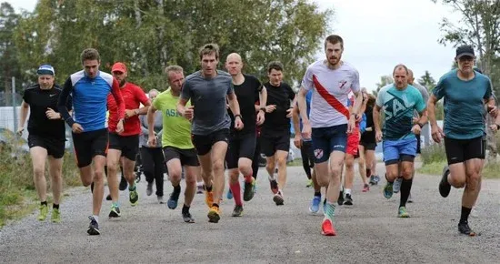
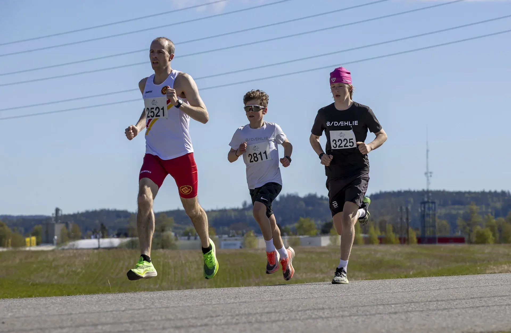
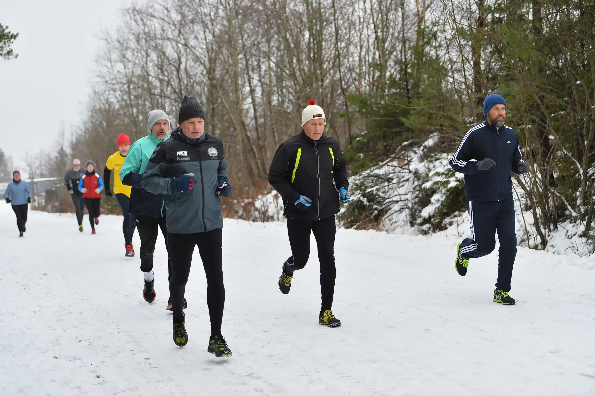
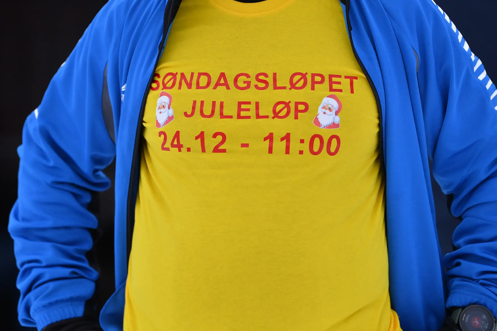

Søndagsløpet - juleløp
Kalnes friidrettsstadion
-
Distanser: 7,0 km, 8,9 km, 10,2 km
-
Underlag: Terreng
-
Sted: Kalnes friidrettsstadion
-
Dato: 24 des.
Beskrivelse av løpet
All info på denne siden er basert på åpne kildedata. Vi gjør vårt beste for å holde den oppdatert men kan ikke garantere at alt er korrekt. Ser du noen feil, kontakt oss så retter vi det opp så snart som mulig.
Søndagsløpet er et populært løpet som finner sted i Kalnesskogen i Sarpsborg kommune, og ble startet i 2014. Løpet avholdes hver søndag fra april til midten av oktober, med tre løyper av ulik lengde: den gule på 7,05 km, den grønne på 8,87 km og den røde på 10,2 km. Løypene varierer i vanskelighetsgrad, med den røde løypa som har bratte stigninger, spesielt mellom 5 og 6 km. Søndagsløpet er gratis å delta i, og passer for alle nivåer, fra mosjonister til eliteløpere.
Høydepunkter
- Søndagsløpet benytter tre løyper av ulik lengde: gul på 7,05 km, grønn på 8,87 km og rød på 10,2 km.
- Løpet har intervallstart i den røde løypa, der de raskeste starter sist.
- Det er gratis å delta, og du kan melde deg på ved å få notert ditt navn på deltakerlisten før start.
Spørsmål & Svar
Annen informasjon
Detaljert informasjon
- Løpets navn: Søndagsløpet - juleløp
- Navn på stedet hvor løpet arrangeres: Kalnes friidrettsstadion
- Distanser: 7,0 km, 8,9 km, 10,2 km
- Arrangørens nettside: https://www.facebook.com/ksfartogspenning/?locale=nb_NO
- Type underlag / Type løp Terreng